扉页
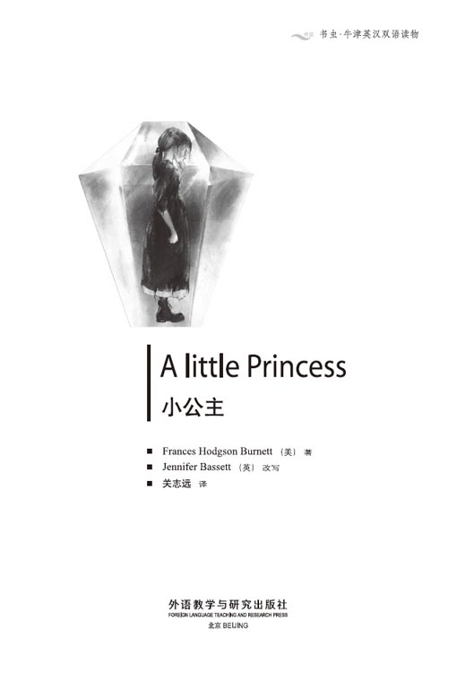
版权页
京权图字：01-2002-6585
Originally published by Oxford University Press, Great Clarendon Street, Oxford. © 2000
This edition is licensed for sale in the People's Republic of China only and not for export therefrom.
'Oxford' is a registered trademark of Oxford University Press.
只限中华人民共和国境内销售，不包括香港特别行政区、澳门特别行政区及台湾省。不得出口。
图书在版编目（CIP）数据
小公主：英汉对照 ／（英）伯内特（Burnett，F. H.）著；（英）巴西特（Bassett，J.）改写；关志远译．— 北京：外语教学与研究出版社，2003.9（2014.3 重印）
（书虫·牛津英汉双语读物）
书名原文：A Little Princess
ISBN 978-7-5600-3675-5
Ⅰ．小… Ⅱ．①伯…②巴…③关… Ⅲ．英语—对照读物，小说—英、汉 Ⅳ．H319.4:I
中国版本图书馆CIP数据核字（2003）第075366号
出版人： 蔡剑峰
责任编辑：易 璐
封面设计：孙莉明
出版发行：外语教学与研究出版社
社 址：北京市西三环北路19号（100089）
网 址：http://www.fltrp.com
版 次：2003年9月第1版
书 号：ISBN 978-7-5600-3675-5
* * *
凡侵权、盗版书籍线索，请联系我社法律事务部
举报电话：（010）88817519 电子邮箱：banquan@fltrp.com
法律顾问：立方律师事务所 刘旭东律师
中咨律师事务所 殷 斌律师
内容简介
内容简介
拉尔夫·克鲁和他的小女儿萨拉一起生活在印度。他是个有钱人，于是当他把萨拉带到伦敦明钦小姐的学校时，明钦小姐非常高兴。她喜欢父亲有钱的女孩子，这样对她的学校有好处。克鲁先生非常爱萨拉，给她买了许多漂亮的衣服、书还有洋娃娃。明钦小姐笑了，可她对她的姐姐说：“萨拉看起来就像个小公主一样，不像学生！”
克鲁先生回印度继续工作去了，而萨拉也开始了她新的学校生活。她是个善良、和气的女孩子，每个人都很喜欢她，很快她就交了很多朋友。
可要知道，当你富有时，每个人都是你的朋友。萨拉11岁生日那天，从印度传来了可怕的消息。可怜的萨拉非常伤心，而她也很快地知道了谁才是她真正的朋友……
A LITTLE PRINCESS
A LITTLE PRINCESS
Ralph Crewe lives in India, with his little daughter Sara. He is a rich man, and when he brings Sara to Miss Minchin's school in London, Miss Minchin is very pleased. She likes girls with rich fathers, because it is good for her school. Mr Crewe loves Sara very much, and he buys her lots of beautiful dresses, and books, and dolls. Miss Minchin smiles, but she says to her sister: 'Sara looks like a little princess, not a schoolgirl!'
Mr Crewe goes back to his work in India, and Sara begins her new life at school. She is a kind, friendly girl. Everybody likes her, and she soon makes friends.
But when you are rich, everybody is your friend. On Sara's eleventh birthday, there is some terrible news from India. Poor Sara is very unhappy, and she quickly learns who her true friends are...
目录
1. School in England
1
School in England
One cold winter day a little girl and her father arrived in London. Sara Crewe was seven years old, and she had long black hair and green eyes. She sat in the cab next to her father and looked out of the window at the tall houses and the dark sky.
'What are you thinking about, Sara?' Mr Crewe asked. 'You are very quiet.' He put his arm round his daughter.
'I'm thinking about our house in India,' said Sara. 'And the hot sun and the blue sky. I don't think I like England very much, Father.'
'Yes, it's very different from India,' her father said. 'But you must go to school in London, and I must go back to India and work.'
'Yes, Father, I know,' said Sara. 'But I want to be with you. Please come to school with me! I can help you with your lessons.'
Mr Crewe smiled, but he was not happy. He loved his little Sara very much, and he did not want to be without her. Sara's mother was dead, and Sara was his only child. Father and daughter were very good friends.
Soon they arrived at Miss Minchin's School for Girls and went into the big house.
Miss Minchin was a tall woman in a black dress. She looked at Sara, and then gave a very big smile.
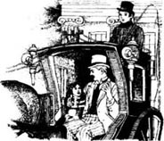
'What a beautiful child!' she said to Mr Crewe.
Sara stood quietly and watched Miss Minchin. 'Why does she say that?' she thought. 'I am not beautiful, so why does she say it?'
Sara was not beautiful, but her father was rich. And Miss Minchin liked girls with rich fathers, because it was good for the school (and good for Miss Minchin, too).
'Sara is a good girl,' Mr Crewe said to Miss Minchin. 'Her mother was French, so she speaks French well. She loves books, and she reads all the time. But she must play with the other girls and make new friends, too.'
'Of course,' said Miss Minchin. She smiled again. 'Sara is going to be very happy here, Mr Crewe.'
Mr Crewe stayed in London for a week. He and Sara went to the shops, and he bought many beautiful, expensive dresses for his daughter. He bought books, and flowers for her room, and a big doll with beautiful dresses, too.
Miss Minchin smiled, but she said to her sister Amelia: 'All that money on dresses for a child of seven! She looks like a little princess, not a schoolgirl!'
* * *
When Mr Crewe left London, he was very sad. Sara was very sad too, but she did not cry. She sat in her room and thought about her father on the ship back to India.
'Father wants me to be happy,' she said to her new doll. 'I love him very much and I want to be a good daughter, so I must be happy.'
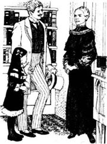
It was a very big, and very beautiful doll, but of course it could not answer.
Sara soon made new friends in the school. Some little rich girls are not very nice children—they think they are important because they have money and lots of expensive things. But Sara was different. She liked beautiful dresses and dolls, but she was more interested in people, and books, and telling stories.
She was very good at telling stories. She was a clever child, and the other girls loved to listen to her. The stories were all about kings and queens and princesses and wonderful countries across the sea.
'How do you think of all those things?' asked her best friend, Ermengarde.
'I have all these pictures in my head,' said Sara. 'So it's easy to tell stories about them.'
Poor Ermengarde was not clever. She could never remember any of her school lessons, and Miss Minchin was always angry with her.
Sara often helped Ermengarde with her lessons. 'Listen, Ermie,' she said. 'You remember that French king, Louis the Sixteenth? Well, this is a story about him. One day in 1792...'
And so Ermengarde learnt her lessons through Sara's stories, and she loved her friend very much. But not everybody was Sara's friend. Lavinia was an older girl. Before Sara came, Lavinia was the richest and the most important girl in the school. But Sara's father was richer than Lavinia's father. So now Sara was more important than Lavinia, and Lavinia did not like that.
'Oh, Sara is so clever!' Lavinia often said. 'Sara is so good at French! Her dresses are so beautiful, and she can sing so well! And she is so rich! Of course Miss Minchin likes her best!'
Sara did not answer when Lavinia said these things. Sometimes, it was not easy, but Sara was a kind, friendly girl, and she did not like to be angry with anyone.
cab n. (formerly) horse-drawn carriage for public hire. （旧时）出租马车。
look out of... 从……往外看。
dark adj. with no or very little light. 黑暗的；昏暗的。
only adj. with no other(s) of the same group, style, etc. existing or present; sole. 唯一的，仅有的。
French n. the people who live in France. 法国人。
doll n. model of a baby or an adult, usu. for a child to play with. 玩偶，玩具娃娃。
schoolgirl n. girl at school （中小学的）女生。
important adj. (of a person) having great influence or authority; influential. （指人）有很大影响或权威的。
be good at... 擅长……
Louis the Sixteenth n. a king of the France Empire. 路易十六（1754 - 1793，法国国王[1774 - 1792]）。
friendly adj. showing or expressing kindness and helpfulness. 亲切的；友好的。
英国的学校
1．英国的学校
那是一个寒冷的冬天。一个小女孩儿跟她的父亲来到了伦敦。小女孩儿名叫萨拉·克鲁，7岁了，有着长长的黑发，眼睛碧蓝明亮。她坐在出租车里父亲的身边，眼睛望着窗外高大的房屋和昏暗的天空。
“你在想什么呢，萨拉？”克鲁先生问她，“怎么不说话？”他搂着自己的女儿说。
“我想我们在印度的房子，”萨拉说，“还有火热的太阳和蓝蓝的天空。我觉得我不怎么喜欢英国，爸爸。”
“是的，这里跟印度很不一样，”父亲说道，“可你得在伦敦上学，我得回印度工作。”
“是的，爸爸，我知道，”萨拉回答，“可我想跟你在一起。跟我一起来上学吧！我会帮你学习功课的。”
克鲁先生笑了，可他并不高兴。他非常爱他的小萨拉，也不想离开她。萨拉的母亲去世了，萨拉是他唯一的孩子。父亲和女儿是很好的朋友。
他们很快来到了明钦小姐的女子学校，走进了那座高大的建筑。
明钦小姐个头很高，一身黑色的衣着。她望着萨拉，笑容可掬。
“这孩子长得真漂亮！”她对克鲁先生说。
萨拉静静地站着，看着明钦小姐。“她为什么这么说呢？”她想，“我不漂亮呀，可她为什么那样夸我？”
萨拉确实不漂亮，可她父亲很有钱。明钦小姐就喜欢父亲有钱的女孩儿，因为这样对学校有好处（当然对明钦小姐也有好处）。
“萨拉是个好姑娘，”克鲁先生对明钦小姐说道，“她妈妈是法国人，所以她法语说得很好。她喜欢书，经常读书。可她也得跟其他姑娘一起玩，也得交些新朋友。”
“当然是了，”明钦小姐说着又笑了，“克鲁先生，萨拉在这里会很快乐的。”
克鲁先生在伦敦待了一周时间。他和萨拉一同逛了许多商店，给女儿买了许多漂亮、昂贵的衣服，还给她的屋里买了书和花儿，还有一个穿着漂亮衣服的洋娃娃。
明钦小姐面带笑容，可她对她姐姐阿米莉亚说：“给一个7岁的女孩儿花那么多钱买衣服！她看起来就像个小公主一样，不像学生！”
* * *
克鲁先生离开伦敦时心里非常难受。萨拉也很难过，可她并没有哭出来。她坐在自己的房间里，心里惦记着乘船返回印度的父亲。
“爸爸要我生活得快乐，”她对她的新洋娃娃说，“我这么爱他，我要做他的乖女儿，所以我必须高兴起来。”
那个洋娃娃很大，也很漂亮，可它当然不会回答她。
萨拉在学校里很快就交上了新朋友。一些家里有钱的小姑娘并不是好孩子——她们因为家里有钱，自己拥有很多贵重的东西而觉得自己很了不起。可萨拉不是这样。她也喜欢漂亮的衣服和洋娃娃，可更喜欢跟人们交往，喜欢读书，喜欢讲故事。
她很会讲故事。她脑瓜儿很聪明，别的女孩儿都爱听她讲故事。她讲的故事都是关于国王、王后、公主，还有大海另一边的美丽国家的。
“你怎么能记得住那么多事情呢？”她最好的朋友埃芒加德问她。
“所有这些东西的样子就装在我的脑袋里，”萨拉回答，“所以讲关于它们的故事就很容易。”
可怜的埃芒加德没那么聪明。她老是记不住老师课上讲的东西，所以明钦小姐总是生她的气。
萨拉经常在学习上帮助埃芒加德。“听着，埃米，”她说，“记得法国国王路易十六吧？好，下面我讲一个关于他的故事。1792年的一天……”
于是埃芒加德就通过萨拉的故事学习了功课，她非常爱她这个朋友。但并不是每个人都是萨拉的朋友。拉维尼娅是个年龄大一些的女孩儿，萨拉来之前，她是学校里最有钱最受宠的女孩儿。可萨拉的父亲比拉维尼娅的父亲更有钱，于是现在萨拉比拉维尼娅更受宠，拉维尼娅对此耿耿于怀。
“哦，萨拉这么聪明！”拉维尼娅经常这样说，“萨拉法语学得这么好！她的衣服都这么漂亮，歌又唱得这么好！她这么有钱！明钦老师当然最喜欢她！”
拉维尼娅这么说的时候，萨拉默不作声。有时候能做到这样并不容易，可萨拉为人和善、友好，她不想跟任何人闹别扭。
2. The diamond mines
2
The diamond mines
And so three years went by. Sara's father wrote to her often, and Sara wrote loving little letters back to him. One day a very exciting letter arrived. Everybody in the school talked about it for days.
'My friend,' wrote Mr Crewe, 'has some mines in northern India, and a month ago his workers found diamonds there. There are thousands of diamonds in these mines, but it is expensive work to get them out. My friend needs my help. So, Little Missus' ( this was Mr Crewe's special name for Sara), 'I am putting all my money into my friend's diamond mines, and one day you and I are going to be very rich...'
Sara was not interested in money, but a story about diamond mines in India was exciting. Nearly everybody was very pleased for Sara, but not Lavinia, of course.
'Huh!' she said. 'My mother has a diamond. Lots of people have diamonds. What's so interesting about diamond mines?'
'But there are thousands of diamonds in these mines,' said Ermengarde. 'Perhaps millions of them!'
Lavinia laughed. 'Is Sara going to wear diamonds in her hair at breakfast, then? Or is it "Princess Sara" now?'
Sara's face went red. She looked at Lavinia angrily, but said quietly, 'Some people call me "princess". I know that. But princesses don't get angry or say unkind things, so I'm not going to say anything to you, Lavinia.'
'To me, you are a princess,' Ermengarde said to Sara later. 'And you always look like a princess, in your beautiful dresses.'
* * *
Sara was a princess to another girl, too. This was Becky. She was a servant in Miss Minchin's school, and she was only fourteen years old, but she worked all day and sometimes half the night. She carried things upstairs and downstairs, she cleaned the floors, she made the fires, and she was always tired and hungry and dirty. She and Sara had very different lives.
But one day Sara came into her bedroom, and there was Becky, sleeping in a chair.
'Oh, you poor thing!' Sara said.
Then Becky opened her eyes and saw Sara. She got up at once. 'Oh, Miss!' she said. 'I'm very sorry, Miss! I just sat down for a minute and—'
'Don't be afraid,' said Sara. She gave Becky a friendly smile. 'You were tired. That's all.'
'Are you—are you going to tell Miss Minchin?' asked Becky. She began to move to the door.
'Of course not,' said Sara. 'Please don't run away. Sit down again for a minute. You look so tired.'
'Oh, Miss, I can't!' Becky said. 'You're very kind, Miss, but Miss Minchin—'
'Please,' said Sara. She took Becky's hand. 'You're only a little girl, like me. Let's be friends.'
And so Becky sat down again, and soon she and Sara were friends. Nobody knew about this, of course. Rich little girls at Miss Minchin's school did not make friends with servant-girls, and it was a wonderful thing for Becky. Nearly every day she and Sara met in Sara's bedroom, just for five or ten minutes. Becky was always hungry, and Sara often bought nice things for her to eat. They sat and talked, and sometimes Sara told Becky some of her stories. Becky loved that.
'Oh, Miss,' she said. 'You tell them so beautifully! Sometimes I like your stories better than things to eat.'
And after those visits to Sara's room, Becky always felt better—not so tired, and not so hungry.
* * *
Some months later Sara had her eleventh birthday. Lessons stopped for the afternoon and there was a big party for all the girls in the school.
'This party is expensive for us,' Miss Minchin said to her sister Amelia. 'But it looks good for the school.'
That afternoon there was a visitor to the school—Miss Minchin's lawyer. He went with Miss Minchin into her office and they closed the door. In the schoolroom next door there was a lot of noise from Sara's party. Everybody in there was very happy.

But in the office Miss Minchin was not happy. She looked at the lawyer angrily. 'What are you saying? Mr Crewe has no money? What about the diamond mines?'
'There are no diamond mines,' said the lawyer. 'Well, there are mines, but there are no diamonds in them.'
'But Mr Crewe's good friend—' began Miss Minchin.
'Mr Crewe's good friend,' said the lawyer, 'ran away with all Mr Crewe's money. Ralph Crewe was ill with a fever, and when he heard about this, he got worse. A week later he was dead.'
'Dead!' cried Miss Minchin. 'But what about his daughter Sara? And this expensive birthday party?'
'Sara Crewe has no money,' said the lawyer. 'Not a penny in the world, Miss Minchin. Not a penny.'
'She must leave my school at once,' Miss Minchin said angrily. 'She must go this afternoon!'
'Where?' said the lawyer. 'Out into the streets? An eleven-year-old girl? That's not going to look very good for your school, Miss Minchin.'
Miss Minchin's face went red.
'You can't put her out in the streets,' said the lawyer. He stood up. 'But perhaps she can work for you.'
The lawyer left, and Miss Minchin called her sister Amelia. 'Bring Sara Crewe here at once,' she said.
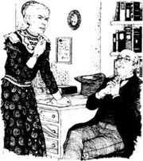
Two minutes later Sara, in her beautiful blue party dress, stood in front of Miss Minchin.
'Have you a black dress, Sara?' Miss Minchin said coldly.
'Yes, Miss Minchin,' said Sara. 'But it's very small.'
'Go and put it on at once,' said Miss Minchin. 'Your father is dead. There were no diamond mines, and your father's friend ran away with all his money. You have nothing. Not a penny. But I am going to be very kind to you. You can stay in my house, but now you must be a servant and work for your bread. You can sleep in a servant's room upstairs, next to Becky's room.'
exciting adj. causing great interest or enthusiasm. 使人激动的；令人兴奋的。
mine n. excavation made in the earth for extracting coal, mineral ores, precious stones, etc. 矿井；矿。
diamond n. transparent precious stone of pure carbon in crystallized form, the hardest substance known. 金刚石；金刚钻；钻石。
unkind adj. not having or showing kindness. 不亲切的；不和蔼的。
servant n. person who works in sb. else's household for wages, and often for food and lodging. 仆人；佣人。
tired adj. feeling that one would like to sleep or rest. 困倦的；疲倦的；疲劳的。
bedroom n. room for sleeping in. 寝室；卧室。
You poor thing! 你这个可怜的人！（表示同情、怜爱）
That's all. 仅此而已；没有别的什么。
lawyer n. person who is trained and qualified in legal matters. 律师。
office n. room(s) used as a place of business, esp. for clerical or administrative work. 办公室。
run away with... 携……逃走；偷走……
fever n. abnormally high body temperature, esp. as a sign of illness. 发烧；发热。
worse adj. of a less excellent or desirable kind. 更坏的；更差的；更糟的。
at once immediately; without delay. 立刻；马上；立即。
钻石矿
2．钻石矿
很快，三年过去了。其间萨拉的爸爸经常给她写信，萨拉也写些短信给爸爸回过去，表达自己的爱。一天她收到了一封让人非常兴奋的信。有好些日子，学校里的人都在谈论这封信的事情。
“我的一位朋友，”克鲁先生在信中写道，“在印度北部拥有几座矿山，一个月前工人们在那里发现了钻石。矿区里有许多许多钻石，不过开采它们会是一项高投入的工作。我的朋友需要我的帮助，所以小米萨斯”（这是克鲁先生对萨拉特殊的昵称），“我把我所有的钱都投到了我朋友的钻石矿上，有一天我们会变得非常有钱……”
萨拉对钱并不感兴趣，可在印度发现钻石矿的故事却挺让人振奋的。几乎所有的人都为萨拉感到高兴，当然除了拉维尼娅。
“哼！”她开腔了，“我妈妈就有一颗钻石。很多人都有钻石。发现一个钻石矿有什么了不起的？”
“可是那些钻石矿里有成千上万颗钻石，”埃芒加德说道，“说不定有数百万颗呢！”
拉维尼娅笑了：“难道萨拉吃早饭时头上也要戴着钻石吗？或者说现在真要叫她‘萨拉公主’吗？”
萨拉听到后脸红了。她生气地看着拉维尼娅，但仍平静地说：“有人叫我‘公主’，这我知道，不过公主是不会随便生气，也不会说让人不愉快的话的，所以我什么也不想跟你说，拉维尼娅。”
“对我来说你就是一位公主，”后来埃芒加德对萨拉说，“你穿着美丽的衣服，看起来一直就像一位公主。”
* * *
在另外一个女孩儿眼里，萨拉也是一个公主。她叫贝基，是明钦小姐学校里的一个仆人，只有14岁，可她整天都在忙着干活，有时还要忙到半夜。她把东西搬上搬下，又拖地板又生火，老是又累又饿，还脏兮兮的。她与萨拉过着完全不同的生活。
可是有一天萨拉回到房间里的时候，贝基正躺在一张椅子上睡觉。
“哦，真可怜啊！”萨拉说道。
贝基睁开眼睛看到了萨拉。她马上站了起来。“哦，小姐！”她说道，“非常抱歉，小姐！我刚刚坐下，还——”
“别害怕，”萨拉说着，冲贝基友好地笑了笑，“你太累了嘛，就是因为这个。”
“你——你是不是要告诉明钦小姐？”贝基边问边开始向门口挪动。
“当然不会，”萨拉说道，“不要跑开，再坐一会儿，你看起来很疲倦。”
“哦，小姐，不行！”贝基说，“你真好，小姐，可是明钦小姐她——”
“别这样，”萨拉说着握住贝基的手，“你还只是个小姑娘呀，跟我一样。让我们做朋友吧。”
于是贝基又坐了下来，两个人很快就成了朋友。当然没有人知道这件事情。在明钦小姐的学校里，有钱人家的女孩子是不会跟女仆交朋友的，所以这对于贝基来说真是一件了不起的事情。几乎每天她都要在萨拉的房间里与萨拉见面，虽然只有5到10分钟的时间。贝基老是感到饥饿，萨拉就经常买些好吃的给她吃。她们坐在那里聊天，有时萨拉给贝基讲些故事。贝基非常喜欢听。
“哦，小姐，”她说道，“这些故事你讲得真好！有时候比起那些吃的来，我更喜欢你讲的故事。”
每次从萨拉屋里出来后，贝基总是会感觉好多了——不再那么累，也不再那么饿了。
* * *
几个月后，萨拉要过她11岁的生日了。那天下午学校停了课，给所有的孩子们举办了一个非常盛大的宴会。
“宴会对我们来说挺奢侈的，”明钦小姐跟她姐姐阿米莉亚说道，“不过可以让学校看起来有光彩。”
那天下午学校里来了一位客人——他是明钦小姐的律师。他跟着明钦小姐走进她的办公室，然后关上了房门。隔壁教室里因为有萨拉的生日宴会而传来很大的喧闹声。宴会上的每个人都很高兴。
可办公室里的明钦小姐却高兴不起来。她生气地看着她的律师。“你说什么？克鲁先生没钱了？那钻石矿呢？”
“根本没有什么钻石矿，”律师说，“不错，那里的确有矿藏，可里面根本没有钻石。”
“可克鲁先生的好朋友——”明钦小姐开口了。
“克鲁先生的好朋友，”律师说，“带着克鲁先生所有的钱跑了。拉尔夫·克鲁发烧生了病，当他听到这个消息后病情更加严重，一周后就撒手西去了。”
“死了！”明钦小姐叫了起来，“那他女儿萨拉怎么办？还有这昂贵的生日宴会怎么办？”
“萨拉·克鲁没有钱，”律师说道，“她在这个世界上一分钱都没有，明钦小姐，一分都没有。”
“那她得马上离开我的学校，”明钦小姐生气地说，“她今天下午就得走！”
“去哪儿？”律师问道，“到大街上流浪？你让一个11岁的女孩儿到大街上去流浪？那样看起来对你的学校可不太好，明钦小姐。”
明钦小姐的脸有些发红。
“你不能把她丢到街上不管，”律师说着站起身来，“不过她也许能为你做些活。”
律师走了，明钦小姐把她姐姐阿米莉亚叫了过来。“马上把萨拉·克鲁带来。”她说道。
两分钟后，萨拉穿着漂亮的蓝色礼服来到了明钦小姐面前。
“有黑衣服吗，萨拉？”明钦小姐冷冷地问。
“有呀，明钦老师，”萨拉答道，“可是很小。”
“马上去把它穿上，”明钦小姐说道，“你爸爸死了。根本没有什么钻石矿，你爸爸的朋友带着他所有的钱跑了。你什么也没有了，一分钱都没有了。可我还是不想亏待你。你可以住在我这里，但现在你是一个仆人了，你得干活养活自己。你可以住楼上仆人们的房间，就在贝基房间的隔壁。”
3. The new servant-girl
3
The new servant-girl
That evening, in the little attic room, Sara sat on the bed in her old black dress. She did not cry, but her face was white and she did not move or speak for hours.
Late at night the door opened quietly, and Becky looked in. Her eyes were red from crying. 'Oh, Miss,' she said. 'All the servants are talking about it. I'm so sorry—so sorry!' She looked at Sara's white face, and began to cry again. Then she ran to Sara, and took her hand.
At last Sara moved. Slowly, she turned her head and looked at Becky. 'Oh, Becky,' she said. And that was all.
That first night in the attic was very long. Sara did not sleep. 'Father is dead,' she whispered, again and again. 'Father is dead. I'm never going to see him again.'
The next morning Sara's new life began. She learnt to clean floors and to make fires. She ran upstairs and downstairs, and she worked in the kitchen.
The cook was a big woman with a red, angry face. 'So,' she said, 'the little rich girl with the diamond mines is now a servant, eh?' She looked at Sara. 'Now, I'm making apple pies this morning. Run down to the shops and get me some apples. And be quick!'
So Sara ran to the shops, and carried a big bag of apples back to the house. Then she cleaned the kitchen floor, and carried hot water up to all the bedrooms.
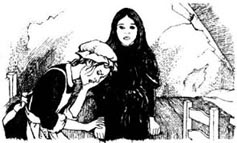
She worked every day, from early in the morning to late at night. She helped in the school, too.
'You speak French well,' Miss Minchin said to her coldly. 'So you can teach French to the younger children. But you're only a servant. Don't forget that.'
The first months of Sara's new life were very hard. She was always tired and hungry, but she never cried. At night, in her little attic, she thought about her father, dead in India all those miles away.
'I must be brave,' she said. 'Father always wanted me to be brave. And I have a bed to sleep in, and something to eat every day. Lots of people don't have that.'
At first Sara's only friend was Becky. Every day Becky came into Sara's room. They did not talk much, but it helped Sara a lot to see Becky's friendly, smiling face.
The girls in the school were sorry for Sara, but Sara was a servant now, and they could not be friendly with a servant. Lavinia, of course, was pleased. 'I never liked Sara Crewe,' she told her friends. 'And I was right about the diamonds—there weren't any!'
Ermengarde was very unhappy. When she saw Sara in the school, Sara walked past her and did not speak. Poor Ermengarde loved Sara and wanted to be friendly, but she was not clever, and she did not understand.
One morning, very early, she got quietly out of bed, went upstairs to the attics, and opened Sara's door.
'Ermengarde!' Sara said. 'What are you doing here?'
Ermengarde began to cry. 'Oh, Sara, please tell me. What is the matter? Why don't you like me now?'
'I do like you,' Sara said. 'Of course I do. But, you see, everything is different now. Miss Minchin doesn't want me to talk to the girls. Most of them don't want to talk to me. And I thought, perhaps, you didn't want to...'
'But I'm your friend!' cried Ermengarde. 'I'm always going to be your friend—and nobody can stop me!'
Sara took Ermengarde's hands. She suddenly felt very happy. Perhaps she cried a little, too. Who can say?
There was only one chair, so the two friends sat on the bed. Ermengarde looked round the attic. 'Oh, Sara, how can you live in this room? It's so cold and—and dirty.'
'It's not so bad,' said Sara. 'And I've got lots of friends. There's Becky in the next room, and—come and see.'
She moved the table under the window, and then she and Ermengarde stood on it and looked out of the window, over the roofs of the houses. In her pocket Sara had some small pieces of bread. She put her hand out of the window, with the bread on it. 'Watch,' she said.
After a minute a little brown bird flew down to Sara's hand and began to eat the bread. Then a second bird came, and a third, and a fourth.
'Oh Sara, how wonderful!' said Ermengarde.
'They know I'm their friend,' said Sara, 'so they're not afraid. Sometimes they come into the room, too.'
Ermengarde looked across the roof to the next attic window. 'Who lives in that house?' she asked.
'Nobody,' said Sara sadly. 'So I never see anybody at that window, and I can only talk to the birds.'
* * *
But one night, two or three weeks later, Becky came into Sara's room. She was very excited.
'Oooh, Miss!' she said. 'An Indian gentleman is moving into the house next door. Well, he's English, but he lived in India for years and years. And now he's going to live next door. He's very rich, and he's ill. Something bad happened to him, but I don't know what.'
Sara laughed. 'How do you know all this?' she said.
'Well, Miss, you know the Carmichael family across the street?' Becky said. 'I'm friendly with their kitchen-girl, and she told me. Mr Carmichael is the Indian gentleman's lawyer, so they know all about him.'
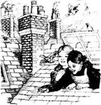
attic n. space or room immediately below the roof of a house. 阁楼；顶楼。
never adv. at no time；on no occasion; not ever. 从不；从来没有；未曾。
kitchen n. room or building in which meals are cooked or prepared. 厨房。
brave n. (of a person) ready to face and endure danger, pain of suffering; having no fear; courageous. （指人）勇敢的；无畏的；有勇气的。
unhappy adj. sad or miserable; not happy. 悲伤的；难过的；不愉快的。
roof n. structure covering or forming the top of a building, vehicle, etc. （建筑物、车辆等的）顶部；屋顶；车顶。
gentleman n. man who is polite and show consideration for the feelings of other people. 绅士。
新女佣
3．新女佣
那天晚上，萨拉穿着黑色的旧衣服，坐在阁楼上她那间狭小的房间的床上。她没有哭，可是脸色苍白，一连几个小时一动不动，也没有说话。
夜很深了，门悄悄地打开，贝基探着脑袋往屋里看。她的眼睛红红的，显然是哭过。“哦，小姐，”她说，“所有的仆人都在谈论这件事。我好难过——真的好难过！”她看着萨拉苍白的脸，忍不住又哭了。接着她跑到萨拉跟前，握住她的手。
萨拉终于动了动。她慢慢抬起头看着贝基。“哦，贝基。”她开口说话了，但就说了这么一句。
住在阁楼里的第一个夜晚是漫长的。萨拉没有睡成觉。“爸爸死了，”她一遍又一遍地嘟囔着，“爸爸死了，我再也见不到他了。”
第二天早上，萨拉开始了她的新生活。她学着拖地板，学着生火，她楼上楼下地跑来跑去，还在厨房里干活。
厨子是个大块头的女人，长着一张发红的脸，脸色凶巴巴的。“看吧，”她说，“家里有钻石矿的富家小姐现在成了仆人，嗯？”她看着萨拉，“好了，我今天早上要做苹果派。下楼到商店里给我买些苹果来。要快！”
于是萨拉跑到商店里拎回来一大袋苹果。接着又把厨房里的地板拖了，还给楼上的寝室里送了热水。
她每天从早到晚地干活，还在学校里帮忙。
“你法语说得不错，”明钦小姐冷冷地对她说，“所以你可以给小孩子上法语课。但你仅仅是个仆人，别忘了这一点。”
萨拉新生活的第一个月非常艰难。她常常感到又累又饿，可她从来没哭过。夜幕降临时，在阁楼上狭小的房间里，她想起了死在千万里之外遥远的印度的父亲。
“我一定要勇敢起来，”她说道，“爸爸一直都要我做个勇敢的人。而且我每天还有一张床睡，有东西吃，很多人都没有这些呢。”
起初萨拉只有贝基一个朋友。贝基每天都到萨拉的房间里来。她们说的并不多，可看到贝基友好、微笑着的脸，萨拉就能获得很大的鼓舞和帮助。
学校里的姑娘们都为萨拉感到难过，可萨拉现在是个女仆了，她们不能跟仆人要好。当然拉维尼娅很是高兴。“我一直都不喜欢萨拉·克鲁，”她对她的伙伴们说，“我当初说那里没有什么钻石也没错——那里就是没有嘛！”
埃芒加德非常难过。她在校园里见到萨拉时，萨拉总是一句话不说就匆匆而过。可怜的埃芒加德非常喜欢萨拉，想跟她好。可脑筋并不怎么灵光的她却怎么也弄不懂萨拉为什么会这样。
一天早上，她起得非常早，悄悄下了床，来到楼上的阁间，推开了萨拉的房门。
“埃芒加德！”萨拉叫道，“你来这里干什么？”
埃芒加德哭了起来。“哦，萨拉，请告诉我，究竟出什么事了？你现在怎么不喜欢我了？”
“我是很喜欢你，”萨拉说，“我当然喜欢你。可是，你知道吗，现在一切都不一样了。明钦老师不让我跟女孩子们说话。大部分女孩子也不愿意跟我说话。我想可能你也不愿意……”
“可我是你的朋友呀！”埃芒加德哭着说，“我要永远和你做朋友——谁也阻止不了我！”
萨拉握住埃芒加德的手。她突然感到非常幸福，不过也许她也在暗自神伤。谁又能说得准呢？
房间里只有一把椅子，于是两个好朋友就坐在床上。埃芒加德环顾狭小的房间。“哦，萨拉，你怎么住这个房间？又冷又——又脏的。”
“这里还可以，”萨拉说，“我还有很多朋友。贝基就住在隔壁，还有——快来看。”
她把桌子移到窗户底下，和埃芒加德一起站上去，从窗口向外看到了房子的屋顶。萨拉口袋里装着一些面包屑。她把面包屑放在手上，从窗口伸了出去。“看！”她说。
过了一会儿，一只棕色的小鸟飞下来落在了萨拉的手上，吃起了她手上的面包屑。然后又来了第二只，第三只，第四只。
“哦，萨拉，太棒了！”埃芒加德说道。
“它们知道我是它们的朋友，”萨拉说，“所以它们不怕我。有时它们还进屋来呢。”
埃芒加德从屋顶上向隔壁小阁屋的窗子望去。“谁住在那个房子里呀？”她问道。
“没有人住，”萨拉难过地说，“我从来没有看到那扇窗子里有人，我只能跟这些鸟儿说说话。”
* * *
可是，两三个星期后的一天晚上，贝基来到萨拉的房间。她非常兴奋。
“嚯，小姐！”她说，“有个印度绅士要搬到隔壁的房子里住了。对了，他是个英国人，但是在印度生活了好多年。现在他马上就要住在隔壁了。他非常有钱，不过他生病了。好像有什么不幸的事发生在他的身上，可我不知道是什么事。”
萨拉笑了。“你是怎么知道这些的？”她问道。
“是这样的，小姐，你知道住在街对面的卡迈克尔一家吗？”贝基说，“我跟那家厨房的女佣很要好，这事是她告诉我的。卡迈克尔先生是那个印度绅士的律师，所以他们对他的情况都很了解。”
4. Ram Dass and the monkey
4
Ram Dass and the monkey
Every morning, when Sara gave the birds their bread, she looked across to the attic window next door. But nobody opened it. Nobody called out 'Good morning!' across the roof, or gave Sara a friendly smile.
'Perhaps the Indian gentleman's servants all sleep downstairs,' she thought sadly.
Her life was very lonely now. She saw Becky every day, of course, but they did not have much time for talking. The cook and the other servants were not friendly. Sometimes, at night, Ermengarde came up to Sara's room, but it was not easy for her to come often.
Then one evening, Sara was in her attic when she heard a noise on the roof. She looked up — and there at the open window was a small monkey.
'Oh, you dear little thing!' cried Sara.
At once, the monkey jumped down and began to run round the room. Sara laughed. She got up on the table and looked out of her window, and at the next window she saw a face—the smiling face of an Indian lascar.
'Oh,' cried Sara, 'have you got a monkey? He's in my room.'
The lascar's name was Ram Dass, and yes, it was his monkey. He gave Sara a big smile.
'I'm so sorry,' he said. 'Can I come and get him?'
'Oh yes, please,' said Sara. 'I think he's afraid of me. And he runs so fast! But can you get across the roof?'
Yes, Ram Dass could, and a minute later he was in Sara's room. Soon the monkey jumped into his arms, and Ram Dass thanked Sara again and again. Then he went away, across the roof, back into the house next door.
* * *
Sara went to the shops five or six times a day, and when she walked past the house next door, she often thought about the Indian gentleman. She felt sorry for him. He had no wife or family, and the doctor visited the house every day. Mr Carmichael the lawyer often visited, too, and sometimes the Carmichael children went with him.
Sara was pleased about that. 'It's nice to see friendly faces when you are ill,' she thought.
The Indian gentleman thought that, too. He liked children very much, but he was a very unhappy man. Mr Carmichael was his friend, and he talked to him a lot. But they talked about only one thing.
'I must find the child,' said the Indian gentleman (his name was Mr Carrisford). 'I must find her and take care of her. But where is she? Here I am, with all this money from the diamond mines—and half of it is Ralph Crewe's money. Oh, Carmichael, why did I leave my friend and run away when things looked bad? Why?'
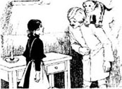
'You ran away because you were ill with a fever,' said Mr Carmichael. 'It nearly killed you, remember?'
'And it did kill poor Ralph,' said Mr Carrisford. 'He put all his money into the mines because I was his friend. But at first we didn't find any diamonds, and all Ralph's money was gone. I was afraid to tell him, so I ran away. And later, when we did find diamonds, Ralph was dead.' He laughed, angrily. 'What a brave friend I was!'
'It's not easy to be brave,' Mr Carmichael said quietly, 'when you're ill with a fever.'
Mr Carrisford looked into the fire. 'Ram Dass tells me,' he said, 'about a little servant-girl next door. The monkey ran away, and Ram Dass went across the roof to get him back from her room. The poor child sleeps in a cold, dirty attic, and works about sixteen hours a day. Is Ralph's daughter living like that? I can't stop thinking about it.'
'We're going to find her one day,' said Mr Carmichael.
'But how?' said Mr Carrisford. He put his head in his hands. 'I never saw her. I don't know her name! Ralph always called her his "Little Missus". We talked all the time about the mines. He never told me the name of her school. Her mother was French, so did he take her to a school in France? Or was it in England?'
'Well, we know there was a child at a school in Paris,' said Mr Carmichael, 'with the name of Carew or Crewe. Her father died suddenly, and a Russian family took her away with them, because she was a friend of their daughter. Perhaps this girl is Ralph Crewe's child. Next week I'm going to Moscow to look for her.'
'I want to go with you, but I'm not well,' said Mr Carrisford. 'I must find her, Carmichael. I must. Every night, in my dreams, I see Ralph Crewe's face, and he says:"Tom, Tom, where is my Little Missus?" And I have no answer for him.' Mr Carrisford took his friend's hand. 'Help me to find her. Help me.'
* * *
Winter came, with its short, dark days, and the attic rooms were very cold. There were no fires for servant girls, and often Sara and Becky could not sleep because of the cold. Sara was taller now, and her old black dress was very short. Her shoes were old, and she had no warm coat for the winter weather. She was thin, too. She did not get very much to eat, and she was always hungry.
She carried big baskets of shopping through the rain and the snow. One day she found a sixpence in the snow, and she bought some hot new bread with it. Then she saw a child by the door of the shop. The child had no shoes and no coat, and her thin face was blue with cold.
'She is hungrier than I am,' thought Sara. And she gave her hot new bread to the child.
When she got back to the school, Miss Minchin was angry. 'Cook is waiting for you, Sara. Why are you late?'
'I can't walk quickly through the snow,' said Sara. 'My shoes are old, Miss Minchin, and my feet get very cold.'
Miss Minchin did not like to hear this. 'Don't speak to me like that!' she said. 'I am kind to you, I'm giving you a home, but you never say "thank you" to me.'
Sara looked at her. 'You are not kind,' she said quietly. 'And this is not a home.'
'Go to your room at once!' said Miss Minchin.
On the stairs Sara met Lavinia. Lavinia looked at her and gave a little laugh. 'Oh, here's Princess Sara,' she said, 'in her old dress and her dirty shoes!'
In the attic, Sara sat down on the chair by her table.
'I must be brave,' she whispered. 'A princess is always brave, so I must be, too. But it's not easy.' She put her head down on her arms. 'Oh, Father, do you remember your Little Missus? Can you see me now?'
And in the house next door Mr Carrisford sat by a warm fire. Moscow is a long way from London, and he could only wait, but he thought about Ralph Crewe's child every day. He thought about other children, too.
'Ram Dass,' he said. 'How is that poor little servant-girl next door? Can we do something for her?'
'I see her in the street every day,' said Ram Dass. 'In the rain, in the snow. She looks thin and hungry. But we can help her. I can easily get in through her attic window. Listen...' And he talked for some minutes.
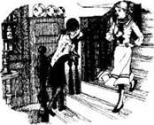
Mr Carrisford smiled. 'Yes,' he said to Ram Dass. 'Yes, I like it. Let's do it.'
lonely adj. sad because one lacks friends or companions. 孤独的；寂寞的。
jump v. move quickly off the ground, etc., esp. up into the air, by using the force of the legs and feet. 跳；跳起；跳跃。
lascar n. seaman from the East Indies. 东印度水手。
visit v. go or come to see (a person, place, etc.). 去或来看（某人、某地等）。
take care of... 照顾……
France n.a western European country. 法国；法兰西。
blue adj. 青色的。
whisper v. speak softly. 轻声说；小声说；低语。
拉姆·达斯和猴子
4．拉姆·达斯和猴子
每天早晨当萨拉给鸟儿喂面包的时候，她都要看看隔壁阁楼的窗子。可没有人打开窗子，没有人隔着屋顶向她说“早上好！”，也没有人给她以友好的微笑。
“可能印度绅士的仆人们全都睡在楼下。”她难过地想。
她如今生活得非常孤独。她每天都去看贝基，不过，她们当然没有多少时间在一起聊天。厨子还有其他仆人并不友好。有时，埃芒加德会在晚上来萨拉的屋里看她，可她并不能经常来。
一天晚上，萨拉正在屋里待着，这时她听到房顶上有什么动静。她抬头看去——只见开着的窗户上有一只小猴子。
“哦，你这可爱的小家伙！”萨拉叫了出来。
那只猴子立刻跳了下来，开始在屋子里跑来跑去。萨拉笑了。她站到桌子上透过窗户向外看去，看到隔壁窗户里有一张脸——一张东印度水手微笑着的脸。
“哦，”萨拉叫道，“你是不是有一只猴子？它在我屋里呢。”
东印度水手名叫拉姆·达斯，是的，那猴子就是他的。他冲萨拉灿烂地笑着。
“对不起，”他说道，“我可以进来逮住它吗？”
“哦，当然可以，请吧，”萨拉回答，“我想它有点儿怕我。它跑得真快！可你能从屋顶上过来吗？”
是的，拉姆·达斯可以，一转眼的工夫他就来到了萨拉的屋里。那只猴子立即就跳到了他胳膊上，拉姆·达斯一遍又一遍地向萨拉道谢。接着他从屋顶走回到了隔壁的房子里。
* * *
萨拉一天要去五六趟商店，每当她经过隔壁的房子时，就会经常想起那个印度绅士。她很为他感到难过。他没有妻室，大夫每天都去看他。律师卡迈克尔先生也经常去看他，有时候还带着他家的孩子们。
萨拉为此感到高兴。“生病时能看到人们友善的面庞真好。”她这样想。
那个印度绅士也是这么想的。他非常喜欢孩子，可他是个非常不幸的人。卡迈克尔先生是他的朋友，他跟他谈了很多话，可他们只谈论一件事情。
“我一定要找到那个孩子，”印度绅士（他名叫卡里斯福特）说道，“我一定要找到她并照顾她。可她在哪儿呢？我带着所有开采钻石矿赚来的钱来到这里——那笔钱有一半是拉尔夫·克鲁的。哦，卡迈克尔，为什么当时形势看起来不好时我要丢下我的朋友逃跑呢？为什么？”
“你出走是因为你当时生病发烧了，”卡迈克尔先生说道，“还记得吗？那场病差点要了你的命。”
“那场病的确要了可怜的拉尔夫的命，”卡里斯福特先生说，“因为我是他的朋友，他把他所有的钱都投在了那个钻石矿上。可一开始我们根本找不到钻石，拉尔夫的钱全赔进去了。我不敢把这事告诉他，所以就一走了之。后来，当我们真的找到钻石的时候，拉尔夫已经死了。”他生气地冷笑着，“我真是个勇敢的朋友！”
“要想真正勇敢起来并不容易，”卡迈克尔心平气和地说道，“特别是在你生病发烧的时候。”
卡里斯福特先生看着炉火。“拉姆·达斯告诉我，”他说，“隔壁有个小女佣。拉姆·达斯的猴子跑了，他沿着屋顶过去把猴子从她屋里捉了回来。可怜的小女孩儿住在又冷又脏的小阁屋里，每天干大约16个小时的活。拉尔夫的女儿也过这样的日子吗？我老是禁不住那样想。”
“我们总有一天会找到她的。”卡迈克尔先生说道。
“可怎么找呢？”卡里斯福特先生说。他用手抱着头，“我从没见过她，我连她的名字都不知道！拉尔夫经常管她叫他的‘小米萨斯’。我们在一起时说的也都是采矿的事。他从来没跟我说过她所在学校的名字。她母亲是法国人，那他是不是把她送到法国的学校了？还是就在英国呢？”
“对了，我们得知巴黎的一所学校里有个孩子，”卡迈克尔先生说，“叫卡鲁还是克鲁的，她父亲突然去世了，一个俄国家庭收养了她，把她带走了，因为她是他们家女儿的朋友。也许这个女孩儿就是拉尔夫·克鲁的孩子。我下周就去莫斯科找她。”
“我想跟你一起去，可我身体不好，”卡里斯福特先生说，“我必须找到她，卡迈克尔。我必须找到她。每天晚上我都梦到克鲁的脸，他对我说：‘汤姆，汤姆，我的小米萨斯在哪里？’我都无言以对。”卡里斯福特先生握着朋友的手，“帮我找到她。帮帮我。”
* * *
冬天来了，天变得很短，很阴暗，小阁屋里非常冷。女仆们的屋子里没有火取暖，萨拉和贝基经常被冻得睡不着觉。萨拉现在长高了，她那件黑色的旧衣服显得非常短。她的鞋旧了，也没有冬天穿的棉衣。她还很瘦，没有多少东两吃，经常挨饿。
她经常拎着买东西的篮子雨里雪里地跑来跑去。一天她在雪地里发现了6便士，于是就用这点钱买了一些新烤出来的热面包。可后来她在商店门口看到一个小孩儿，没穿鞋子，也没有外套，消瘦的脸冻得发紫。
“她肯定比我更饿。”萨拉想。于是她就把热面包给了那个孩子。
当她回到学校的时候，明钦小姐很生气。“厨子等着你呢，萨拉。你怎么这么晚才回来？”
“在雪地里我走不快，”萨拉说道，“我的鞋子旧了，明钦小姐，我的脚冷极了。”
明钦小姐不喜欢听到这些。“不准那样跟我说话！”她说道，“我对你不薄，我给了你一个家，可你从来都没对我说声‘谢谢’。”
萨拉看了看她。“你对我不好，”她平静地说，“这里也不是一个家。”
“马上回你的房间去！”明钦小姐说道。
萨拉在楼梯上碰到了拉维尼娅。拉维尼娅看了她一眼，还轻蔑地笑了一声。“哦，这不是萨拉公主吗，”她说道，“穿着旧衣服和脏鞋子的萨拉公主！”
在小阁屋里，萨拉坐在桌旁的椅子上。
“我一定要勇敢起来，”她轻声对自己说，“公主从来都是勇敢的，所以我也要勇敢起来。可做到这个并不容易。”她把头枕在胳膊上，“哦，爸爸，你还记得你的小米萨斯吗？你现在能看到我吗？”
在隔壁房子里，卡里斯福特先生坐在温暖的炉火旁。莫斯科离伦敦很远，他只能等待，可他每天都在想拉尔夫·克鲁的女儿，他也想起其他的孩子。
“拉姆·达斯，”他说，“隔壁那个可怜的小女佣怎么样了？我们能为她做些什么吗？”
“我每天都在街上见到她，”拉姆·达斯说，“不管下雨还是下雪。她看起来很瘦弱，也很饿。可我们能够帮助她。我可以很容易地从她小阁屋的窗子爬过去找她。听着……”接着他们在一起商量了一会儿。
卡里斯福特先生笑了。“行！”他对拉姆·达斯说道，“行，我觉得可以。就那样做吧。”
5. The magic
5
The magic
One night, a week later, Ermengarde got quietly out of bed and went upstairs to the attic. Sara was not there, so Ermengarde sat on the bed and waited. At ten o'clock Sara came slowly up the stairs and into the room.
Ermengarde looked at her. 'Oh, Sara!' she cried. 'Are you ill? Your face is white, and you look so tired!'
'It was a hard day, Ermie,' said Sara. She sat down. 'Miss Minchin was angry with Cook. Then Cook was angry with us. Becky and I had no dinner and no tea.'
'Does that happen often?' said Ermengarde unhappily. 'You never told me. Are you—are you hungry now?'
Sara looked at her. 'Yes,' she whispered. 'Yes, I am. I would like to eat that table. I would like to eat you.'
Ermengarde jumped up. 'Sara,' she cried. 'I had a box of things from home today. There's a big cake in it. I'm going to get it—now! You and Becky can eat it all!'
Soon, Ermengarde was back. The three girls sat on Sara's bed, and there were some happy smiles when Ermengarde opened her box and took out the cake.
'Oh, Miss, look at that!' said Becky.
'You are kind, Ermie,' said Sara. She laughed. 'It's magic, you know. When things are very bad, something nice always happens. Here we are, having a party!'
Ermengarde gave Sara and Becky some cake, and they began to eat. Suddenly, they stopped. There was a noise of feet on the stairs. They listened.
'Oh no!' whispered Becky. 'It's—it's Miss Minchin!'
'Yes,' said Sara. Her face was white again.
Then the door opened, and Miss Minchin came in.
'So, Lavinia was right,' she said angrily. 'Tea with Princess Sara! Becky, get back to your attic at once!'
'Oh, please, Miss Minchin!' cried Ermengarde. 'It was my cake, from home. We're only having a party.'
'Go back to your room, Ermengarde,' Miss Minchin said coldly, 'and take these things with you. And tomorrow' —she looked at Sara— ' there's no breakfast, no dinner, and no tea for you. Remember that!'
* * *
Soon the attics were quiet again. Tired and hungry, the two servant-girls went to sleep. But after an hour or two Sara opened her eyes. Was it a noise from the window perhaps?
'Something is different,' Sara whispered. 'What is it?' She sat up in bed and looked round the room. She looked again and again, and her eyes were very big.
The room was different—very different. There was a wonderful hot fire. There were new, warm blankets on her bed, and beautiful pictures on the walls.
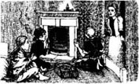
Sara slowly got out of bed. 'Is this a dream?' she said. 'Where did all these things come from?' She put out her hand to the fire. 'No, it's not a dream. The fire is hot—I can feel it. And oh! Look at the table!'
There was a red cloth on the table, and cups and plates. There was hot tea, and wonderful things to eat—hot meat pies and sandwiches and cake, oranges and apples.
Sara ran to Becky's room. 'Becky,' she whispered. 'Come quickly. The magic is here again. Come and look.'
When Becky saw the room, she could not speak at first. Then she said, 'Oh, Miss! What is it? How did all these things get here?'
'I don't know,' said Sara. 'It's magic. At first I thought it was a dream, but it isn't. Look—these pies are hot. Let's eat them. Hot meat pies aren't a dream!'
They sat down by the fire, and ate and drank.
'Oh, those pies were good, Miss!' Becky said. 'And the tea and the cake. I don't understand magic, but I like it!'
Sara looked round the room. 'Oh, Becky, look! There are some books, too. I didn't see them before.'
She ran to look at them, and opened the top book. 'There's some writing here! Listen. It says, "To the little girl in the attic. From a friend." Oh, Becky!' Sara closed the book and looked up. 'I have a friend, Becky,' she said slowly. 'Someone is my friend.'
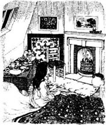
* * *
The next morning Becky met Sara in the kitchen.
'Oh, Miss,' she whispered. 'Was the magic there this morning? Or did it go away in the night?'
'No, it's still there,' Sara whispered back. 'I ate some cold meat pie for breakfast. And the fire was still warm!'
Becky laughed happily. 'Oh my! Oh my!' she said.
Miss Minchin could not understand it. When Sara came into the schoolroom, she looked happy and well. Miss Minchin wanted to see a white, unhappy face, and eyes red from crying. 'How can that child smile?' she thought angrily. But of course, she did not know about the magic.
And the magic did not go away. Every evening, when Sara went up to bed, she found new things in the attic. There were more warm blankets, for her and for Becky. There were pictures on the walls; there were books, new shoes, and a winter coat. And best of all, there was always a fire, and a wonderful hot dinner on the table.
'But where does it all come from?' Becky said one night when they sat by the fire. 'Who does it, Miss?'
'A friend does it,' Sara said. 'A kind, wonderful friend. But he doesn't want us to know his name.'
They began to look at one of the new books, and then Becky looked up.
'Oh, Miss,' she whispered. 'There's something at the window. What is it?'
Sara got up to look. 'It's the monkey!' she said. 'The monkey from next door.' She opened the window, and the monkey jumped down into her arms. 'Oh, you poor little thing,' Sara said. 'You're so cold!'
Becky was very interested. 'I never saw a monkey before,' she said. 'He's not very beautiful, Miss! What are you going to do with him?'
'It's very late now,' said Sara. 'He can stay in my room tonight, and I can take him home in the morning.'
magic n. power of apparently using supernatural forces to change the form of things or influence events; superstitious practices based on this. 魔法；巫术。
right adj. true or correct. 对的；正确的。
blanket n. thick woolen covering used, esp. on beds, for keeping people warm. 毛毯；毡子。
dream n. sequence of scenes and feelings occurring in the mind during sleep. 梦。
pie n. meat or fruit encased in pastry and baked in a dish. 以肉或水果为馅的烤饼；馅饼。
sandwich n. two or more slices of bread with meat, cheese, etc. between. 三明治。
best of all 最好的是，最让人高兴的是。
before adv. at an early time; in the past. 以前；过去。
奇迹
5．奇迹
一周后的一天晚上，埃芒加德悄悄下了床来到了楼上的阁屋里。萨拉不在，于是埃芒加德坐在床上等她。10点钟的时候，萨拉慢慢上了楼梯，回到了屋里。
埃芒加德看着她。“哦，萨拉！”她叫出了声，“你病了吗？你的脸色怎么这么苍白，你看起来怎么这么疲惫！”
“今天过得真惨，埃米，”萨拉说着坐了下来，“明钦小姐对厨子不满，厨子就拿我们出气。我和贝基都没晚饭吃，也没有茶喝。”
“经常会这样吗？”埃芒加德难过地问道，“你从来没跟我说过。你——你现在饿吗？”
萨拉看了看她。“饿，”她低声说，“是的，我饿。我恨不得把那张桌子吃了，恨不得把你也吃了。”
埃芒加德跳了起来。“萨拉，”她大声说，“我今天从家里收到一盒东西，里面是一个大蛋糕。我这就去取——现在就去！你和贝基可以把它都吃掉！”
不一会儿埃芒加德就回来了。三个女孩子坐在萨拉的床上，当埃芒加德打开盒子拿出蛋糕时，大家都露出了幸福的微笑。
“哇，小姐，看！”贝基说。
“你真好，埃米，”萨拉笑着说，“你知道，有时候很神奇，当情况很糟糕时，总有些好的事情会发生。来，我们开个聚会吧！”
埃芒加德给了萨拉和贝基一些蛋糕，她们吃了起来。突然，她们停了下来。楼梯上传来了脚步声。她们都听着。
“哦，不好！”贝基小声说道，“是——是明钦小姐！”
“是她。”萨拉说着脸又变白了。
门开了，明钦小姐走了进来。
“没错，拉维尼娅说对了，”她生气地说，“跟萨拉公主喝茶！贝基，马上回你的阁屋去！”
“哦，求你了，明钦小姐！”埃芒加德哭着说，“那是我从家里带来的蛋糕。我们只想开个聚会。”
“埃芒加德，回你的房间去。”明钦小姐冷冷地说，“把东西带走。还有，明天”——她看了看萨拉——“明天没有你的早餐、晚餐，也没有你的茶。给我记住这些！”
* * *
阁楼很快又安静下来了。两个女仆去睡了，又累又饿的。可过了一两个小时以后，萨拉睁开了眼睛。是不是窗子那里有什么动静？
“有点不对劲儿，”萨拉嘟囔道，“是什么东西呢？”她从床上坐了起来环视着房间。她睁大眼睛，看了一遍又一遍。
屋里跟原来相比是不一样了——非常不一样。屋子里有一炉烧得很旺的火，床上有暖和的新毯子，墙上还挂着漂亮的画。
萨拉慢慢下了床。“是不是在做梦呀？”她说，“这些东西都是从哪儿来的呀？”她把手伸到炉火上。“不，这不是做梦。火是热的——我能感觉到。哇！看桌子上！”
桌子上铺着一块红布，还摆着杯子和盘子，里面盛着热茶和其他好吃的东西——热气腾腾的肉馅饼、三明治、蛋糕，还有橘子和苹果。
萨拉跑到贝基的房间里。“贝基，”她轻声说道，“快过来，奇迹又出现了，快过来看。”
当贝基看到房间里的这一切时，刚开始她惊得说不出话来。过了一会儿才说道：“哦，小姐！这是怎么回事？这些东西都是怎么来的？”
“我不知道，”萨拉说，“这是个奇迹。起初我以为是在做梦，可这不是梦。看——那些馅饼是热的。我们吃吧，热腾腾的肉馅饼不是梦！”
她们坐在火炉旁，吃喝起来。
“哦，这些馅饼的味道可真棒，小姐！”贝基说道，“还有这茶和蛋糕也不错。我不懂什么是奇迹，可我非常喜欢！”
萨拉环视自己的房间。“哇，贝基，看！那儿还有一些书。我刚才没有发现。”
她跑过去打开最上面那本书。“这里写着字呢！听着，上面写的是：‘送给阁楼里的小女孩儿。一个朋友。’喔，贝基！”萨拉合上书，抬起头来。“我有个朋友，贝基，”她慢慢地说道，“有人是我的朋友。”
* * *
第二天早上，贝基在厨房里见到了萨拉。
“哦，小姐，”她轻声说道，“今天早上那些神奇的东西还在吗？还是晚上就消失了？”
“没有消失，还在呢，”萨拉轻声回答，“我吃了一些凉的肉馅饼当早餐。炉火还暖和着呢！”
贝基高兴地笑着。“太好了！太好了！”她说道。
明钦小姐无法理解这些事情。当萨拉来到教室时，她显得很高兴，很有精神。明钦小姐希望看到的是一张苍白、忧愁的脸和一双哭红了的眼睛。“这孩子怎么能笑得出来呢？”她生气地想。不过，当然了，她不知道有奇迹发生。
奇迹没有消失。萨拉每天晚上上楼睡觉时，就会发现小阁屋里有新的东西。有更多的暖和的毯子，是给她和贝基两个人的；墙上有画；还有书、新鞋子和冬天穿的棉衣。最让人高兴不过的是老是有温暖的炉火，桌子上还放着热乎乎的晚餐。
“可这些都是从哪儿来的呢？”一天晚上她们在炉火前坐着时贝基问道，“这是谁做的呢，小姐？”
“一个朋友，”萨拉答道，“一个善良的、非常好的朋友。可他不想让我们知道他的名字。”
她们拿出一本新书看了起来，过了一会儿贝基抬起头来。
“哦，小姐，”她轻声说道，“窗户上有什么东西。是什么呀？”
萨拉起身过去看。“是那只猴子！”她说道，“是隔壁房子里的猴子。”她打开窗户，猴子跳了进来，跳进了她怀里。“哦，可怜的小家伙，”萨拉说道，“你怎么这么冷！”
贝基非常好奇。“我以前从来没见过猴子，”她说，“它不是很好看呀，小姐！你要拿它怎么办？”
“现在天已经很晚了，”萨拉说，“就让它待在我的屋子里吧，我明天早上送它回家。”
6. Lost and found
6
Lost and found
The next morning, the first visitor to the house next door was Mr Carmichael, back from Russia. But when he came into the house, his face was sad. Mr Carrisford knew the answer at once.
'You didn't find her,' he said.
'I found her,' Mr Carmichael said. 'But it was the wrong girl. Her name is Emily Carew, and she's much younger than Ralph Crewe's daughter. I'm very sorry.'
'We must begin again,' said Mr Carrisford unhappily. 'But where? It's two years now. Two years!'
'Well, she isn't at a school in Paris. We know that,' Mr Carmichael said. 'Let's look at the schools in England now.'
'Yes,' said Mr Carrisford. 'Yes, we can begin in London. There's a school next door, Carmichael.'
Perhaps it was the magic again, but at that moment Ram Dass came .quietly into the room.
'The little servant-girl from the attic is here,' he said to Mr Carrisford. 'With the monkey. He ran away again last night to her room. Would you like to see her?'
'Yes,' said Mr Carrisford. 'Yes, I would. Bring her in.'
And so Sara came into the room and stood in front of the Indian gentleman. She smiled at him.
'Your monkey came to my room last night,' she said, 'and I took him in because it was so cold.'
Mr Carrisford watched her face with interest. 'That was kind of you,' he said.
Sara looked at Ram Dass by the door. 'Shall I give him to the lascar?' she asked.
'How do you know he is a lascar?' said Mr Carrisford.
'Oh, I know lascars,' Sara said. 'I was born in India.'
Mr Carrisford sat up suddenly. 'In India?' he said. 'But you're a servant at the school next door.'
'Yes, I am now,' said Sara. 'But I wasn't at first.'
The Indian gentleman looked at Mr Carmichael, and then Mr Carmichael looked at Sara.
'What do you mean by "at first", child?' he asked.
'When Father first took me to the school.'
'Where is your father?' said Mr Carmichael.
'He died,' said Sara, very quietly. 'His friend ran away with all his money, and there was no money for me. There was nobody to take care of me. So Miss Minchin put me in the attic and said I must work for my bread.'
The Indian gentleman moved in his chair. 'What—what was your father's name?' he said. 'Tell me.'
Sara looked at him sadly. 'Ralph Crewe,' she said. 'He died in India from a fever, two years ago.'
Mr Carrisford's face went very white. 'Carmichael,' he whispered, 'it is the child—the child!'
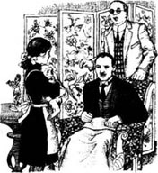
* * *
That was an exciting day for many people. At first poor Sara did not understand. But Mr Carmichael talked to her quietly and told her everything—the true story about her father's friend and the diamond mines, and the two years of looking for Ralph Crewe's daughter.
'And all the time,' she said later to Mr Carrisford, when they sat by his fire, 'I was in the house next door.'
Tom Carrisford took her hand. 'Yes,' he said. 'And you're never going back there. Your home is with me now. I'm going to take care of Ralph's Little Missus.'
Sara laughed, happily. 'And you were the friend, too. All those beautiful things in my attic came from you—you and Ram Dass. Becky and I thought it was magic!'
The Indian gentleman smiled at her. 'We were sorry for you,' he said. 'Ram Dass can move very quietly, and he carried the things across the roof when you were out. I couldn't find Ralph's daughter, but I wanted to help somebody. And then Ram Dass told me about this sad, lonely little servant-girl in the attic next door.'
And so the story ended happily for everybody—but not for Miss Minchin. Sara was very rich now, and Miss Minchin wanted her to come back to the school. She came to see Mr Carrisford, but he said some very angry things to her, and she went away with a red face.
Becky came to live in Mr Carrisford's house, too. She was Sara's servant, and she was very happy. She had a warm room, nice dresses, and good things to eat every day. And she loved Sara very much.
Ermengarde often came to visit Sara, and Sara helped her with her school lessons again. Ermengarde was not clever, but she was a true friend. On that first day in the Indian gentleman's house, Sara wrote a letter to her, and Ermengarde carried the letter into the schoolroom.
'There were diamond mines,' she told Lavinia and the other girls. 'There were! There were millions and millions of diamonds in the mines, and half of them are Sara's. And they were her diamonds all the time when she was cold and hungry in the attic. And she was a princess then, and she's a princess now!'
Russia n. a European country. 俄国。
in front of... before... 在……前头；在……面前。
sit up 坐起来。
nobody pron. not anybody; no person. 没有人；无人。
all the time 一直；自始至终。
be sorry for... 为……感到抱歉。
true adj. loyal; faithful. 真正的；忠诚的。
失而复得
6．失而复得
第二天早晨，第一个来到隔壁房子里的是卡迈克尔先生，他刚从俄国回来。可他进屋时表情非常难过。卡里斯福特先生立刻就知道了答案。
“你没有找到她是不是？”他说。
“找到了，”卡迈克尔先生说道，“不过她不是我们要找的人。那个女孩儿叫埃米莉·卡鲁，比拉尔夫·克鲁的女儿小得多。非常抱歉。”
“我们得重新开始找，”卡里斯福特先生沮丧地说，“可去哪儿找呢？都两年了，两年了呀！”
“嗯，我们知道，她没有在巴黎的学校读书。”卡迈克尔先生说，“我们现在开始搜寻英国的学校吧。”
“是的，”卡里斯福特先生说，“是的，我们可以先从伦敦找起。隔壁就是一所学校，卡迈克尔。”
或许这又是奇迹，可就在那时拉姆·达斯静静地走进了屋子。
“住在阁楼里的小女佣来了，”他对卡里斯福特先生说，“还带着那只猴子。它昨晚又跑到她屋里去了。你要不要见见她？”
“是的，”卡里斯福特先生说，“是的，我想见见她。带她进来。”
于是萨拉进了屋，站在这个印度绅士面前。她朝他微笑着。
“你的猴子昨晚跑到我的屋里去了，”她说，“我留下了它，因为它很冷。”
卡里斯福特先生饶有兴趣地看着她的脸庞。“你心肠真好。”他说道。
萨拉看看门口站着的拉姆·达斯。“我可以把它交给这个东印度水手吗？”她问道。
“你怎么知道他是东印度水手？”卡里斯福特先生问道。
“噢，我知道东印度水手，”萨拉说，“我是在印度出生的。”
卡里斯福特先生突然坐了起来。“你出生在印度？”他问道，“可你是隔壁学校的仆人呀。”
“是的，我现在是，”萨拉说道，“可我当初并不是。”
这位印度绅士看看卡迈克尔先生，接着卡迈克尔先生又看看萨拉。
“你说的‘当初’是什么意思，孩子？”他问道。
“就是我爸爸刚送我来学校的时候。”
“你爸爸在哪儿？”卡迈克尔先生问道。
“他去世了，”萨拉很平静地说道，“他的朋友卷着他所有的钱逃走了，我也就没有钱了，也就没有人照顾我了，于是明钦小姐就把我丢进了阁屋里，说我必须干活养活自己。”
印度绅士在椅子上挪动了一下。“你——你爸爸叫什么名字？”他问道，“告诉我。”
萨拉悲伤地看着他。“拉尔夫·克鲁，”她说，“他两年前在印度发烧病死了。”
卡里斯福特先生脸色变得苍白。“卡迈克尔，”他低声说道，“就是这个孩子——就是她！”
* * *
对于很多人来说，这是令人兴奋的一天。一开始可怜的萨拉弄不明白。可卡迈克尔先生平心静气地和她聊天，跟她说了所有的一切——她父亲朋友的真实故事和那钻石矿，还有两年来寻找拉尔夫·克鲁的女儿的事情。
“我一直，”后来他们一起坐在火炉旁边时，她对卡里斯福特先生说，“我一直都在隔壁住着呀。”
汤姆·卡里斯福特握着她的手。“是的，”他说，“你再也不用回到那里去住了。从现在起我这里就是你的家了。我要好好地照顾拉尔夫的小米萨斯。”
萨拉笑了，笑得非常开心。“你也就是那个朋友啦。我阁屋里所有美妙的东西都是你们——你和拉姆·达斯送的。我和贝基原来还以为是奇迹呢！”
印度绅士朝她微笑着。“我们为你感到难过，”他说，“拉姆·达斯的动作非常轻，你不在时他就翻过屋顶把东西送过去。我找不到拉尔夫的女儿，可我想帮助别人。后来拉姆·达斯就跟我说了隔壁阁屋里那个悲伤、孤独的小女仆的事。”
故事的结局让每个人都感到高兴——除了明钦小姐。萨拉现在又非常有钱了，明钦小姐想让她回去上学。她去找了卡里斯福特先生，可他非常生气地说了她一通，让她红着脸走了。
贝基也搬到卡里斯福特先生的房子里住了。她成了萨拉的女仆，感到非常高兴。她有了一个温暖的房间，漂亮的衣服，每天还有很多好吃的东西。她非常爱萨拉。
埃芒加德经常来看萨拉，萨拉又开始帮她学习功课了。埃芒加德没有那么聪明，可她是个真正的朋友。去印度绅士家里的头一天，萨拉给她写了封信，埃芒加德把信带到了学校。
“确实有钻石矿，”她对拉维尼娅和其他姑娘们说道，“确实有！钻石矿里有数不尽的钻石，其中有一半是属于萨拉的。那一直都是她的钻石，哪怕是当她住在小阁屋里，又冷又饿的时候。她那时是一位公主，现在也是！”
ACTIVITIES: Before Reading
ACTIVITIES
Before Reading
1．Read the story introduction of the book. How much do you know now about the story? Tick one box for each sentence.
1) Sara Crewe is very rich.
YES □／NO □
2) Sara first comes to England when she is eleven years old.
YES □／NO □
3) Sara is a princess.
YES □／NO □
4) Miss Minchin likes little rich girls.
YES □／NO □
5) Sara is happy when her father leaves.
YES □／NO □
6) Everybody wants to be Sara's friend.
YES □／NO □
2．What is going to happen in this story? Can you guess? Tick one box for each sentence.
1) Mr Crewe dies.
YES □／NO □
2) Mr Crewe goes to prison.
YES □／NO □
3) Mr Crewe loses all his money.
YES □／NO □
4) Sara is poor, hungry, and sad all her life.
YES □／NO □
5) Sara has no friends.
YES □／NO □
6) After a time Sara finds some new friends.
YES □／NO □
7) She runs away from Miss Minchin's school.
YES □／NO □
8) She goes back to India.
YES □／NO □
ACTIVITIES: While Reading
ACTIVITIES
While Reading
l．Read Chapter 1, and then complete these sentences with the right words.
clever, expensive, lessons, like, princess, rich, richer, sad
1) Miss Minchin liked Sara because her father was______.
2) Mr Crewe bought many ______things for his daughter.
3) Miss Minchin thought Sara looked like a little______.
4) When Mr Crewe left London, Sara was very______.
5) Sara's friend Ermengarde was not______, so Sara helped her with her school______,
6) Sara's father was ______than Lavinia's father, and because of that, Lavinia did not ______Sara.
2．Read Chapter 2. Who said or wrote this, and to whom?
1) 'My friend has some mines in northern India.'
2) 'To me, you are a princess.'
3) 'Sit down again for a minute. You look so tired.'
4) 'Sometimes I like your stories better than things to eat.'
5) 'Mr Crewe's good friend ran away with all Mr Crewe's money.'
6) 'She must leave my school at once.'
7) '... you must be a servant and work for your bread.'
3．Before you read Chapter 3, can you guess the answer to this question?
Are any of these people going to be kind to Sara?
Miss Minchin / Ermengarde / Becky / Lavinia
4．Read Chapter 3. Are these sentences true (T) or false (F)? Change the false sentences into true ones.
1) Sara often cried in the first months of her new life.
2) She worked from early in the morning to late at night.
3) One morning Lavinia came up to her attic room.
4) Sara was very sad when Ermengarde came to see her.
5) Sara never saw anybody at the next attic window.
6) Then the Carmichael family came to live next door.
5．Read Chapter 4, and answer these questions.
Why
1) ... did Ram Dass come across the roof to Sara's room?
2) ... did Sara feel sorry for the Indian gentleman?
3) ... did Mr Carrisford want to find Ralph Crewe's child?
4) ... did Mr Carrisford run away from Ralph in India?
5) ... was Mr Carrisford sorry for the little servant-girl next door?
6) ... did Mr Carmichael go to Moscow?
7) ... did Sara give her bread to a child in the street?
8) ... was Sara very unhappy that night?
6．Before you read Chapter 5, can you guess what happens? Choose some of these answers.
1) Ram Dass goes to Sara's attic, but Sara doesn't see him.
2) Ram Dass leaves some money for Sara in her room.
3) Sara talks to Ram Dass and tells him her name.
4) Ram Dass tells Mr Carrisford that Sara is Ralph Crewe's daughter.
5) The monkey runs away again to Sara's room.
7．Read Chapters 5 and 6, and then join these halves of sentences together.
1) One night Ermengarde took a cake to Sara's room, ...
2) Later that night Sara found some wonderful things in her room, ...
3) Every evening after that, when Sara went to bed, ...
4) Sara knew that she had a kind, wonderful friend, ...
5) Then the monkey came to Sara's room one night, ...
6) She talked about lascars and India and her father, ...
7) and at first she and Becky thought it was magic.
8) and the next day Sara took him back to the Indian gentleman's house.
9) but Miss Minchin came up and stopped the party.
10) so Mr Carrisford found Ralph Crewe's daughter at last.
11) but she did not know his name.
12) there were new things in the attic for her and for Becky.
ACTIVITIES: After Reading
ACTIVITIES
After Reading
1．At the end of the story Sara wrote a letter to Ermengarde. Complete her letter with the words below. (Use one word for each gap.)
after, better, care, diamonds, fever, find, friend, half, home, house, kind, know, live, mines, next, nicest, servant, wonderful
Dear Ermie,
I have something ______ to tell you! I am writing this in the Indian gentleman's ______. His name is Mr Carrisford, and he was my father's ______ in India. And, Ermie, there WERE ______ in the ______ — thousands of them—but they only found them ______ my father died.
Mr Carrisford was ill with a ______too, and when he got ______. he came to England to look for me. But he couldn't ______ me because he didn't ______ my name. And all the time, Ermie, I was a ______ in the house ______ door!
______ of the diamonds are mine now, Mr Carrisford says. But the ______ thing is this, Ermie. Mr Carrisford is a very ______ man, and he wants to take ______ of me. So I'm going to ______ with him and have a ______ again. You must come and visit me often.
Your best friend, Sara
2．Here is a new illustration for the story. Find the best place in the story to put the picture, and answer these questions.
The picture goes in Chapter ______.
1) Who is Sara talking to?
2) What is happening in Sara's room at this moment?
3) What happens next?
Now write a caption for the illustration.
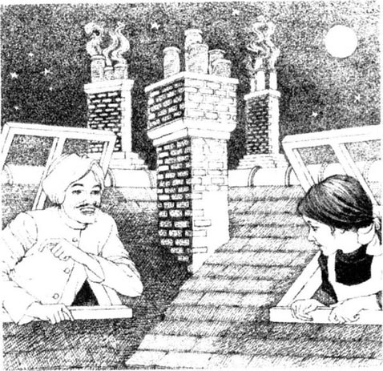
Caption:_________________________________________
3．How did Miss Minchin find out about Ermengarde's cake and the tea party in the attic? Put her conversation with Lavinia in the right order, and write in the speakers' names. Lavinia speaks first (number 5).
1)______ 'Upstairs, in the attic.'
2)______ 'Yes, Lavinia, what is it?'
3)______ 'A big cake. She said Sara was hungry.'
4)______ 'Having tea with—! How do you know this, Lavinia?'
5)______ 'Oh, Miss Minchin. I have something to tell you!'
6)______ 'A box? What was in it?'
7)______ 'She's having tea with Princess Sara.'
8)______ 'Of course she isn't hungry! Right. I'm going upstairs at once. You were right to tell me this, Lavinia. You can go back to bed now.'
9)______ 'I saw her on the stairs, with a big box.'
10)______ 'But it's after ten o'clock! Where is she?'
11)______ 'What's she doing up there?'
12)______ 'Ermengarde isn't in her bed, Miss Minchin.'
4．Here is Miss Minchin, telling someone about Sara. How many untrue things does she say? Can you correct them?
'Sara Crewe? Oh yes, she lives across the street now, with Mr Carrisford, her father's brother. I was very kind to her when her father died in Africa. She slept in the best bed room, and was never cold or hungry. She taught French to the younger children, but she didn't work in the kitchen or the house. I saw Mr Carrisford yesterday. He was very friendly, and he wants Sara to come back to my school.'
5．Here is a puzzle. The answer is a word from the story with eight letters. To find the word, choose the right letters (one from each sentence) and write them in the boxes.
At first there were lots of them; then there were none of them, but in the end there were lots of them. What are they?
□ □ □ □ □ □ □ □
| My first is in SAD. | My fifth is in COOK. |
| My second is in ILL. | My sixth is in KIND. |
| My third is in TEA. | My seventh is in DOLL. |
| My fourth is in MAGIC. | My eighth is in PRINCESS. |
6．What did you think about the people in this story? Choose some names, and finish these sentences in your own words.
Sara / Ermengarde / Lavinia / Becky
Mr Crewe / Miss Minchin / Mr Carrisford / Ram Dass
1) I felt sorry for ______ because ______.
2) I liked ______ because ______.
3) I didn't like ______ because ______.
4) ______ was right to ______.
5) ______ was wrong to ______.
封底
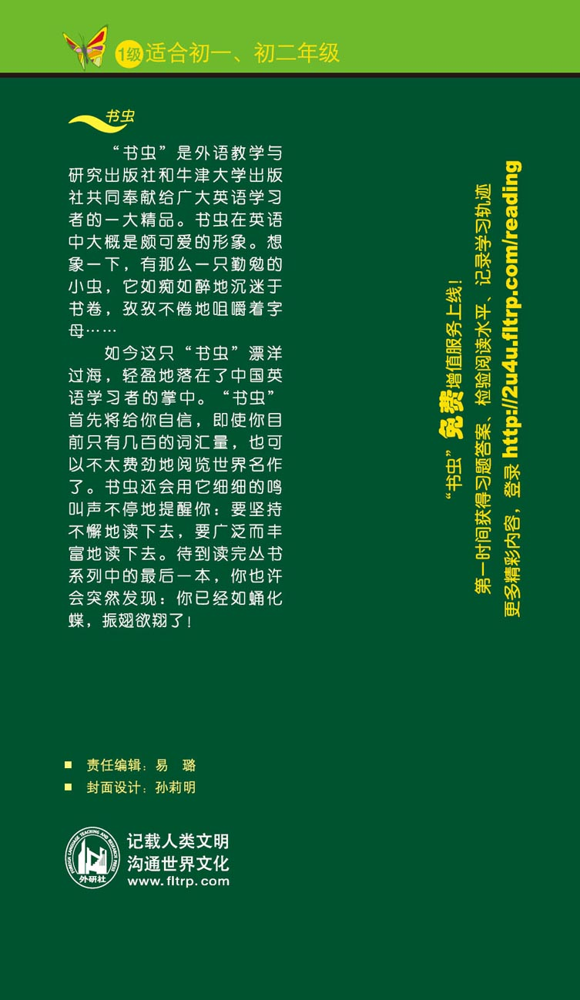